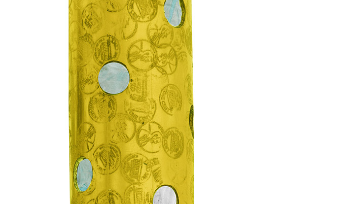

Now Showing: Jory Rabinovitz
June 2 - July 28, 2014
Sculpture Center
44-19 Purves Street
Long Island City, NY 11101
SculptureCenter is pleased to announce Now Showing: Jory Rabinovitz. Now Showing is a program that highlights a single artwork or project in areas throughout SculptureCenter's building. Working with artists to find new ways of approaching the unique architecture of SculptureCenter, Now Showing is an exploratory and flexible mode for presenting artworks and projects to our audiences.
New York-based artist Jory Rabinovitz will present a new site-specific sculptural work within a space recently created by the current renovation of the SculptureCenter building. The work, Non Olet, starts in the gallery space and extends into the men's and women's bathrooms, returning to the original site, and connecting these disparate areas. The title of the work references the Latin phrase "pecunia non olet," or "money doesn't stink," a reference to Roman emperor Vespian's "Urine Tax," where urine was collected from the public bathrooms of the working class and resold for various chemical processes, entering the chain of commerce and trade.
Rabinovitz's sculptural works investigate boundaries of material and metaphor and their social and societal actualities. The actual compounds comprising exchange systems and their telestic potentials are explored in sculptures that reimagine relationships between substances, considering their attributes and utility.
Jory Rabinovitz lives and works in New York, NY. Rabinovitz has a current solo show on view at Martos Gallery, New York and most recently exhibited at Abrons Art Center, New York; Tanya Leighton, Berlin; Off Vendome, Düsseldorf; Galerie Balice Hertling, Paris, and Night Gallery, Los Angeles. Rabinovitz has received numerous awards and residencies including the The Rema Hort Mann Foundation visual art grant (2014) and the Emerging Artist Fellowship, Socrates Sculpture Park, Long Island City, NY (2010).
For additional information please click here
MARTOS GALLERY
Current Exhbitions
Jory Rabinovitz
Eighty Three
April 18 - June 7, 2014
540 West 29th Street
New York, NY
10001
212-560-0670
www.martosgallery.com
info@martosgallery.com